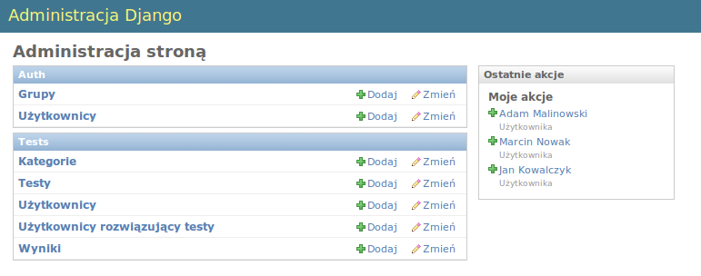

Witamy w Podręczniku użytkownika serwera knut¶
Wprowadzenie¶
Podręcznik ten jest przygotowany dla użytkownika i administratora serwera testów knut. Opisuje on zagadnienia związane z zarządzaniem informacjami użytkowników edytora i programu do rozwiązywania testów.
Serwer knut to darmowe oprogramowanie służące do współdzielenia testów i wyników. Umożliwia on zarządzanie testami, wynikami i kontami użytkowników.
Manipulacja testami powinna być prowadzona za pośrednictwem edytora testów. Panel administracyjny serwera testów pozwala na edycje informacji o testach i wyników testów, ale w normalnym użytkowaniu nie powinien być wykorzystywany. Jedyna funkcją, którą administrator powinien się zajmować w normalnym trybie pracy jest zarządzanie kontami użytkowników edytora testów.
- Możliwosći serwera:
- Udostępnianie testów i wyników (przeglądanie, pobieranie i udostępnianie)
- Tworzenie i modyfikowanie kont użytkowników
- Zarządzanie testami
- Zarządzanie wynikami i odpowiedziami uczniów
Wymagania systemowe¶
- zainstalowane Django w wersji 1.1+, Python 2.5 lub 2.6 i relacyjna baza danych(np. MySQL lub PostgreSQL)
- minimum 30MB pamięci RAM
- conajmniej 100 MB miejsca na dysku twardym
Instalacja programu¶
Kod serwera można pobrać z repozytorium na github.com (http://github.com/mahjong/knut-server lub przez stronę http://knutest.org). Najlepiej jest sklonować repozytorium za pomocą systemu kontroli wersji Git. Ułatwi to aktualizację oprogramowania do najnowszej wersji.
Pierwszym krokiem po pobraniu kodu jest dostosowanie ustawień w pliku settings.py a w szczególności ustawień bazy danych.
Przykładowe ustawienia dla MySQL:
DATABASE_ENGINE = 'mysql'
DATABASE_NAME = 'knutdb'
DATABASE_USER = 'mojlogin'
DATABASE_PASSWORD = 'qwerty'
Kolejnym krokiem jest utworzenie tabel w bazie danych poleceniem python manage.py syncdb. Django utworzy wtedy wymaganą strukturę i na koniec pozwoli założyć konto administratora. Konto to będzie potrzebne przy administrowaniu strony.
Zarządzanie serwerem¶
Serwer knut oprócz obsługiwania współdzielenia testów posiada stronę www prezentującą projekt oraz umożliwiającą przeglądanie testów. Dodatkowo administrator serwera ma dostęp do panelu administracyjnego dzięki czemu może ręcznie dokonywać zmian.
Jednakże w normalnym użytkowaniu serwera, jedyną czynnością, która powinna być wykonywana przez administratora jest zarządzanie kontami użytkowników edytora testów. Pozostałe możliwości serwera są udostępnione przez API i dostępne z poziomu programów klienckich (np. edytora testów knut i programu do rozwiązywania testów).
Interfejs WWW¶
Strona WWW projektu
Strona WWW prezentuje najważniejsze informacje o projekcie, pozwala na pobranie i zobaczenie kodu źródłowego programów oraz umożliwia przeglądanie opisów testów dostępnych na serwerze.
Panel Administracyjny¶
Panel administracyjny wymaga logowania. Domyślnie logowanie odbywa się na stronie http://adres_strony/admin/ np. http://knutest.org/admin/.
Logowanie do panelu administracyjnego

Po podaniu prawidłowego loginu i hasła nastąpi przekierowanie do panelu administracyjnego.
Panel administracyjny
- Panel administracyjny podzielony jest na 2 sekcje:
- Auth - pozwala na zarządzanie administratorami serwera. Mamy możliwość definiowania grup i ich uprawnień
- Tests - umożliwia zarządzanie testami a w szczególności zarządzanie użytkownikami edytora testów
Zarządzanie użytkownikami edytora testów¶
Zarządzanie użytkownikami edytora testów jest możliwe po kliknięciu na Użytkownicy w sekcji Tests panelu administracyjnego. Wyświetli się lista użytkowników.
Lista użytkowników edytora testów
Z tej strony mamy możliwość edycji istniejących użytkowników oraz tworzenie nowych.
Dodawanie użytkownika¶
- Po kliknięciu Dodaj Użytkownika na stronie z listą użytkowników pojawi się formularz z 3 polami:
- Nazwa użytkownika - login potrzebny do weryfikacji konta
- Hasło
- Imię i nazwisko - wyświetlana nazwa użytkownika
Dodawanie nowego użytkownika
- Po uzupełnieniu wszystkich pól należy zapisać dane. Mamy do wyboru 3 przyciski:
- Zapisz i dodaj nowe - zapisuje wprowadzone dane i przekierowuje do nowego, pustego formularza dodawania użytkownika
- Zapisz i kontynuuj edycję - zapisuje wprowadzone dane i zostaje na bierzącej stronie
- Zapisz - po zapisaniu wprowadzonych danych przekierowuje do listy użytkowników edytora testów
Edycja użytkownika¶
Aby edytować istniejącego użytkownika należy kliknąć na imię i nazwisko z listy użytkowników edytora testów. Pojawi się wtedy okno edycji.
Edycja użytkownika